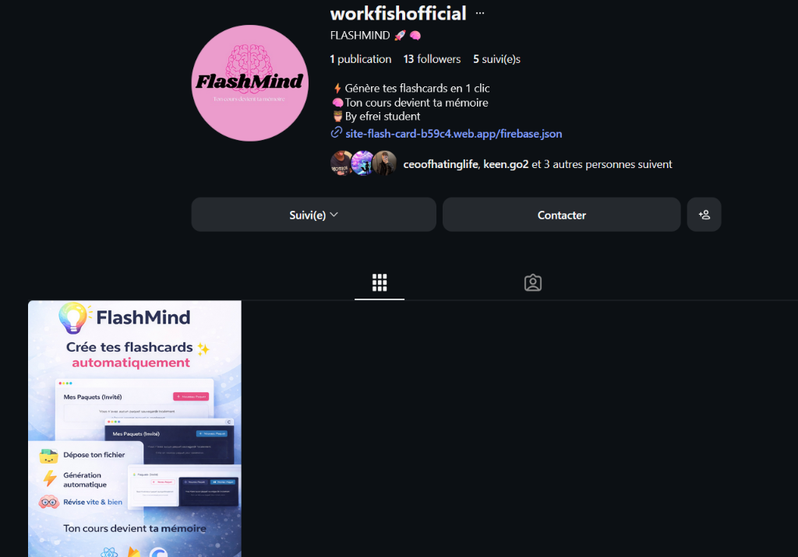
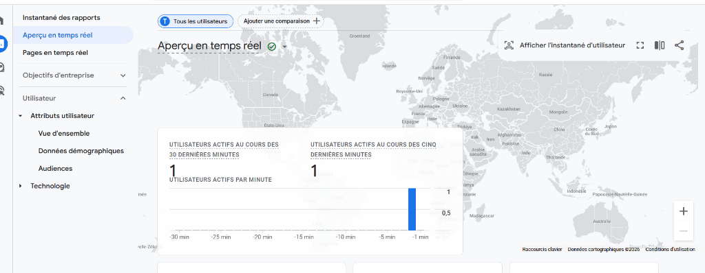
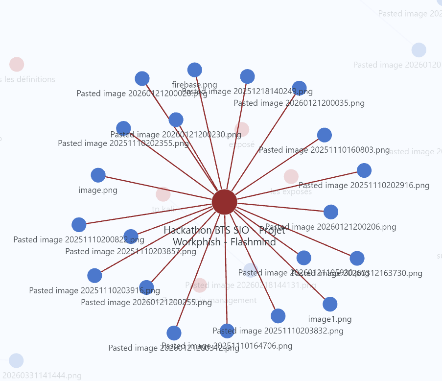
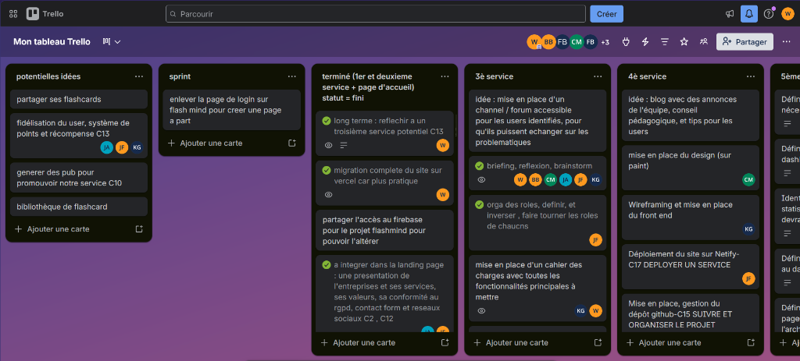
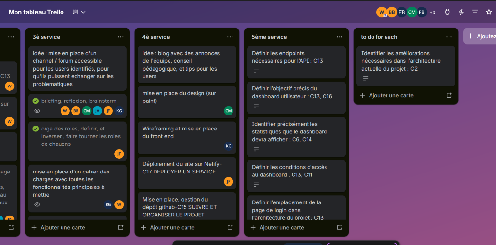

$ ls -R /home/scholar/projects/
Gérer le patrimoine informatique
Répondre aux incidents et aux demandes
Développer la présence en ligne
Travailler en mode projet
Mettre à disposition un service informatique
Organiser son développement professionnel
$ cat /var/log/alternance.log
$ ls -la /home/bobby/dev_labs/
Root-Me, Hack The Box, OverTheWire, OSINT4Fun, Hacker101, Trace Labs, Maltego, Oscar Zulu, IrisCTF, StarpwnCTF, SekaiCTF...
$ cat /home/bobby/docs/glpi_inventory.md
Dans le cadre de notre formation en BTS SIO, nous avons réalisé la mise en place d’un outil de gestion de parc informatique à l’aide de GLPI afin de centraliser l’inventaire matériel et logiciel d’un parc informatique.
Cette solution permet d’automatiser la collecte d’informations des postes clients grâce à l’agent GLPI et d’améliorer la gestion globale du système d’information.
Pour réaliser cette installation, plusieurs étapes ont été nécessaires :
Mise à jour du système et installation des paquets de base :
sudo apt update && sudo apt upgrade -y
sudo apt install -y apache2 mariadb-server unzip wget curlInstallation de PHP et des extensions requises :
sudo apt install -y php php-cli php-common php-mysql php-mbstring php-curl php-xml php-gd php-intl php-zip php-bz2attention au version
Vérifier les modules chargés :
php -m | grep -E 'xml|dom|simplexml'Connexion en root :
sudo mysql -u root -pCréation de l’utilisateur et de la base pour GLPI :
CREATE DATABASE glpi CHARACTER SET utf8mb4 COLLATE utf8mb4_unicode_ci;
CREATE USER 'glpi'@'localhost' IDENTIFIED BY 'MotDePasseFort!';
GRANT ALL PRIVILEGES ON glpi.* TO 'glpi'@'localhost';
FLUSH PRIVILEGES;
EXIT;glpi
<Mot_de_passe_administrateur> : pour acceder a glpi
Télécharger l’archive depuis GitHub :
cd /tmp
wget https://github.com/glpi-project/glpi/releases/download/10.0.20/glpi-10.0.20.tgzfaire attention a decoloresser dans le bon repertoire
Décompresser et déplacer :
tar -xvzf glpi-10.0.20.tgz
sudo mv glpi /var/www/Droits d’accès :
sudo chown -R www-data:www-data /var/www/glpi
sudo chmod -R 755 /var/www/glpiCréer le fichier de configuration :
sudo nano /etc/apache2/sites-available/glpi.confContenu :
<VirtualHost *:80>
ServerName glpi.localhost
ServerAlias 192.168.X.X
DocumentRoot /var/www/glpi/public
<Directory /var/www/glpi/public>
Require all granted
RewriteEngine On
RewriteCond %{HTTP:Authorization} ^(.+)$
RewriteRule .* - [E=HTTP_AUTHORIZATION:%{HTTP:Authorization}]
RewriteCond %{REQUEST_FILENAME} !-f
RewriteRule ^(.*)$ index.php [QSA,L]
</Directory>
</VirtualHost>attention a bien verifier que les lignes commenté sont bien commentée et que ca pointe bien vers lz bonne ip.
Activer le site et le module rewrite :
sudo a2enmod rewrite
sudo a2ensite glpi.conf
sudo systemctl reload apache2sudo apache2ctl -SAller sur : http://192.168.X.X/
Suivre l’installateur (choisir la base glpi, user glpi).
Finir la configuration et se connecter avec :
user : glpi
pass : glpi
Créer un compte sur GLPI Network.
Renseigner la clé dans Configuration → Générale → Marketplace.
Installer et activer le plugin GLPI Inventory.
Télécharger l’agent :
pareil ici toujours verifier que le lien vers le telechargement marche : une simple
recherche suffit.
wget https://github.com/glpi-project/glpi-agent/releases/download/1.15/glpi-agent-1.15-linux-installer.pl -O glpi-agent.pl
sudo perl glpi-agent.plil demande :
Provide an url to configure GLPI server:
> http://192.168.1.18
Provide a path to configure local inventory run or leave it empty: leave empty
Provide a tag to configure or leave it empty: leave empty
Vérifier le service :
systemctl status glpi-agentDepuis la machine cliente :
sudo glpi-agent --server http://192.168.X.X/marketplace/glpiinventory/ --force --debugAller dans Parc → Ordinateurs.
La machine cliente doit apparaître automatiquement.
Export possible en CSV / PDF pour le rapport.
/var/log/apache2/error.log
/var/log/apache2/access.log
/var/log/glpi-agent/Ouvrir PowerShell en administrateur (clic droit → Exécuter en tant qu’administrateur) puis exécuter :
msiexec /i "C:\Users\bobby\Downloads\glpi-agent-1.15-x64.msi".msi si nécessaire.cd "C:\Program Files\GLPI-Agent".\glpi-agent.bat --server http://192.168.1.14/marketplace/glpiinventory/--server → URL de ton serveur GLPI (adapter l’IP si elle
change)--debug → active les logs détaillés dans la console--force → force l’envoi de l’inventaire immédiatementRestart-Service glpi-agent
Get-Service glpi-agent
Résultat attendu :
Status Name DisplayName ------ ---- ----------- Running glpi-agent GLPI AgentC:\Users\bobby\Downloads\glpi-agent-1.15-x64.msi
cd "C:\Program Files\GLPI-Agent"
.\glpi-agent.bat --server http://192.168.1.14/marketplace/glpiiventory
important : mettre le bon url si par exemple tu as configuré sur l'installer un autre url met celui que tu as mis
astuce : mettre plusieurs url lorsque tu fais l'installation avec le .msi, par exemple mettre http://192.168.1.18/glpi, http://192.168.1.18, http://192.168.1.18/marketplace/glpiinventory
6. Redémarrer le service
Restart-Service glpi-agent
bien penser a activer l'inventaire dans administration > inventaire et c'est la premiere ligne
commande pour installer Tailscale sur Debian :
curl -fsSL https://tailscale.com/install.sh | sh sudo tailscale upse mettre des les Downloads et charger le msi
cd "C:\Program Files\GLPI-Agent"C:\Users\bobby\Downloads\glpi-agent-1.15-x64.msicd "C:\Program Files\GLPI-Agent"
Restart-Service glpi-agent.\glpi-agent.bat --server http://192.168.X.XX/marketplace/glpiinventory/ --force --debugMettre le bon chemin, donc http://192.168.X.XX ou
http://192.168.X.XX/marketplace/glpiinventory/ ⇒ chemin qu'on a mis sur
l'installer lors de l'installation du msi.
Get-Service glpi-agent
Résultat attendu :
Status Name DisplayName ------ ---- ----------- Running glpi-agent GLPI Agentsudo perl glpi-agent.plnormalement l'agent est déjà installé on a juste a changé l'IP et mettre celle du serveur de baptiste.
sudo glpi-agent --server http://192.168.X.XX/marketplace/glpiinventory/ --force --debugou mettre les chemin que Baptiste a mis lors de son installation du serveur GLPI
(ici on a pas eu forcément besoin de mettre marketplace/glpiinventory)
Cette réalisation nous a permis de découvrir le fonctionnement de GLPI et de comprendre la mise en place d’un outil de gestion de parc informatique.
Nous avons pu apprendre à configurer un serveur web sous Linux, déployer une application web complexe, gérer une base de données MariaDB et automatiser l’inventaire d’un parc grâce à l’agent GLPI.
Cette expérience nous a également permis de renforcer nos compétences en documentation technique et en déploiement de services.
$ cat /home/bobby/docs/C7_Support_Ticketing.md
Pendant le Hackathon Workphish, il était crucial de maintenir une organisation rigoureuse malgré les délais serrés. En tant que chef de projet, j'ai mis en place un système de support via GLPI pour centraliser les besoins techniques et documentaires de l'équipe.
devhackaton (Baptiste C. & Baptiste B.).$ cat /home/bobby/docs/C11_Visibility_SEO.md
Pour le projet FlashMind, l'objectif était de créer une application accessible et visible. Nous avons dû nous assurer que le service était correctement référencé et que nous pouvions quantifier l'intérêt des utilisateurs.
<meta> essentielles (description, viewport, title).<head> de
toutes les pages du site.<!-- Google tag (gtag.js) -->
<script async src="https://www.googletagmanager.com/gtag/js?id=AW-XXXXXXXXX"></script>
<script>
window.dataLayer = window.dataLayer || [];
function gtag(){dataLayer.push(arguments);}
gtag('js', new Date());
gtag('config', 'AW-XXXXXXXXX');
</script>workfishofficial.
Profil Instagram Officiel
Post de lancement FlashMind

Google Analytics - Suivi en temps réel
$ cat /home/bobby/docs/C14_Project_Planning.md
Le hackathon s'est déroulé sur 48 heures. Sans une planification stricte, le projet FlashMind n'aurait pu être livré. Nous avons adopté une méthodologie Agile (Scrum).

Structure globale du projet (Mindmap)

Suivi des tâches sur Trello (Sprint)

Backlog et organisation des services
Pour garantir la réussite de FlashMind, nous avons défini nos objectifs selon la méthode SMART. Cette approche permet de transformer une idée floue en un plan d'action concret.
$ cat /home/bobby/docs/C17_Service_Deployment.md
Initialement, le projet FlashMind était hébergé sur Netlify. Pour des raisons d'optimisation, de performances et d'intégration plus étroite avec notre stack React, nous avons opéré une migration vers Vercel.
Que ce soit Netlify ou Vercel, nous utilisons une architecture Serverless (sans serveur).
Contrairement à un hébergement classique où vous louez une machine qui tourne 24h/24, le serverless fonctionne à la demande :
npm run build génèrent correctement le dossier dist.main déclenche automatiquement une nouvelle mise en ligne sur Vercel.
$ cat /home/bobby/docs/tableau_de_synthèse_E4.csv
| BTS SERVICES INFORMATIQUES AUX ORGANISATIONS | SESSION 2023 | ||||||
|---|---|---|---|---|---|---|---|
| Tableau de synthèse des réalisations professionnelles | |||||||
| NOM et prénom : COHEN Nourith | N° candidat : [NON RENSEIGNÉ] | ||||||
| Centre de formation : Efrei | Option : ▣ SISR ▢ SLAM | ||||||
| Adresse URL du portfolio : https://bobbyelfamoso.github.io/portfolio-bts-sio/ | |||||||
| Compétences mises en œuvre | |||||||
| Réalisations
professionnelles (intitulé et liste des documents et productions associés) |
Période (sous la forme du JJ/MM/AA au JJ/MM/AA) |
Gérer le patrimoine informatique ▸Recenser et identifier les ressources numériques ▸Exploiter des référentiels, normes et standards ▸Mettre en place et vérifier les niveaux d’habilitation ▸Vérifier les conditions de la continuité d’un service ▸Gérer des sauvegardes ▸Vérifier le respect des règles d’utilisation |
Répondre aux incidents et aux demandes ▸Collecter, suivre et orienter des demandes ▸Traiter des demandes concernant les services réseau et système, applicatifs ▸Traiter des demandes concernant les applications |
Développer la présence en ligne ▸Participer à la valorisation de l’image de l’organisation ▸Référencer les services en ligne et mesurer leur visibilité ▸Participer à l’évolution d’un site Web |
Travailler en mode projet ▸Analyser les objectifs et les modalités d’organisation ▸Planifier les activités ▸Évaluer les indicateurs de suivi et analyser les écarts |
Mettre à disposition un service
informatique ▸Réaliser les tests d’intégration et d’acceptation ▸Déployer un service ▸Accompagner les utilisateurs |
Organiser son développement professionnel ▸Mettre en place son environnement d’apprentissage personnel ▸Mettre en œuvre des outils de veille ▸Gérer son identité professionnelle ▸Développer son projet professionnel |
| Réalisations en cours de formation | |||||||
| installation d’une vm | 2024 | X | |||||
| installer les outils nécessaires pour créer un site web (Lamp, Wamp, Xamp) | 2024 | X | |||||
| motiver les équipes et leur attribuer des tâches réalistes et a rendre en un temps adapté tout en les challengeant | 2025 | X | |||||
| installation du serveur glpi et de ses agents sur les pc pour faire un recensement | 2024 | X | X | ||||
| créer un site web + déploiement firebase ou github pages si c’est statique | 2025 | X | X | ||||
| Mise en place d’une page d’accueil centralisant les services | 2025 | X | |||||
| Cadrage du projet (objectifs, périmètre, MVP) | 2025 | X | |||||
| Arbitrages (POC, délais, priorités) | 2025 | X | |||||
| Tests d’intégration / acceptation (vitrine + services) | 2025 | X | |||||
| création de réseaux sociaux + post en ligne pour promouvoir le service | 2025 | X | |||||
| Réalisations en milieu professionnel en cours de première année | |||||||
| Gestion des onboarding / offboarding sur azure et intra | 2024-25 | X | X | ||||
| Préparation et présentation de user guide de KeePass ou d’outil GRC pour tout type d’utilisateurs. | 2024 | X | |||||
| dépannage et remplacement de matériels défectueux | 2024-25 | X | |||||
| Avertir les users lors d’un incidents (credentials trouvés par l’équipe CTI dans le darkweb) et assurer la conformité des users ciblés | 2025 | X | X | ||||
| animation webinar awareness cyber | 2025 | X | |||||
| organisation et vérifications des contrôles dans le cadre de la certif iso27001 | 2025 | X | X | ||||
| Réalisations en milieu professionnel en cours de seconde année | |||||||
| [VIDE] | |||||||